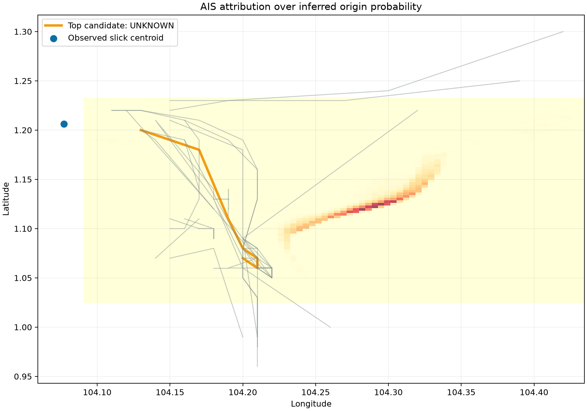
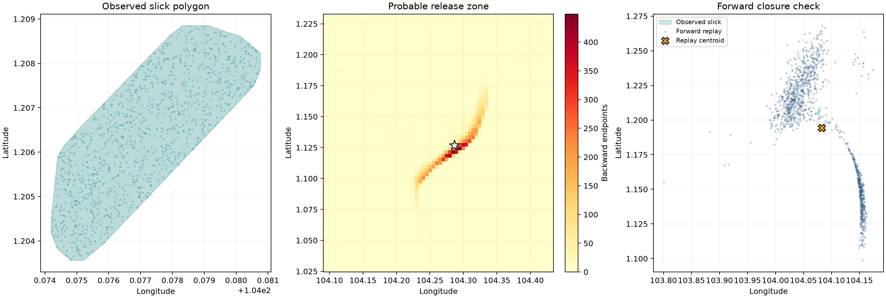

OPERATIONAL RESPONSE
No vessel nominated.
The system refused nomination because these gates failed: Candidate separation. The system preserves the evidence and controls the consequence instead of converting uncertainty into an accusation.
The system refused nomination because these gates failed: Candidate separation. The system preserves the evidence and controls the consequence instead of converting uncertainty into an accusation.
Preserve the generated evidence package and its integrity digest.
RECOMMENDEDAcquire terrestrial or commercial AIS for the incident window.
RECOMMENDEDRequest an independent SAR, optical, port-log or sampling record.
RECOMMENDEDRe-run attribution only when new evidence changes the case record.
RECOMMENDED

| Rank | Identity | Score | Forward error | Track quality |
|---|---|---|---|---|
| #1 | Unverified vessel identityMMSI 525021455 | 41.0% | 1.28 km | 58.0% |
| #2 | Unverified vessel identityMMSI 525121006 | 40.1% | 7.87 km | 27.3% |
| #3 | Unverified vessel identityMMSI 525701793 | 39.9% | 3.78 km | 100.0% |
| #4 | Unverified vessel identityMMSI 525301746 | 38.9% | 3.06 km | 26.6% |
| #5 | Unverified vessel identityMMSI 412438950 | 36.5% | 10.64 km | 100.0% |
| #6 | Unverified vessel identityMMSI 525018427 | 33.4% | 11.48 km | 100.0% |
| #7 | Unverified vessel identityMMSI 525103010 | 30.8% | 11.26 km | 100.0% |
| #8 | Unverified vessel identityMMSI 525019679 | 30.3% | 12.23 km | 100.0% |
| Type | Artifact | Status | SHA-256 |
|---|---|---|---|
| OBSERVED | Observed SAR sourceinput/sentinel1_vv.tif | VERIFIED | 4955444493976a0d135313d910fa18e19891c774c84c77b8ede4b5cae8e1af11 |
| CATALOGUE | Satellite acquisition metadatainput/sentinel1_subset_status.json | VERIFIED | 69f9cfdad15a4977847290cddd8b44b69c653a9ff1888e0d8bf2aaec90aa1842 |
| INFERRED | Frozen SAR model resultsegmentation/sar_result.json | VERIFIED | 99e288c180300f197e8d5fc51443d9a1336289176da7af699ed7b9d0745f9248 |
| INFERRED | Physical plausibility screensegmentation/physics_screen.json | VERIFIED | cae8e0232c2ba488ef76322737579a48931c4988035cda10ed37cd1f0529de8f |
| REVIEWED | Analyst-approved slick geometryreview/approved_slick.geojson | VERIFIED | 3e7dcf6fbc1c5182c78c9fc6167affea1ab747402ea75e20eeea9bb143d898eb |
| MODELLED | Date-matched ocean and wind fieldsattribution/environment/environment.json | VERIFIED | 7bd562840468ea06eaf73eb40efae68d5def72e0dc874e18c85f47d39b83d032 |
| INFERRED | Reverse-drift release estimateattribution/drift/release_estimate.json | VERIFIED | 049c1546b8ef004519225b7cfd000dd3024d2bf81fdf3af63f62b2608cb5f8d5 |
| INFERRED | Probable origin-zone geometryattribution/origin_zone.geojson | VERIFIED | b716d311732c94f8cd2bb1c3a687b7b4939c096fdcc95a1f7f78ec71ed4ad9ca |
| OBSERVED | Normalized historical AIS evidenceattribution/ais/ais_normalized.csv | VERIFIED | 605656f477a32c2571504a704e768cd230ec559afcd9d515ca48f489f9d068cd |
| AUDIT | AIS quality auditattribution/ais/ais_quality.json | VERIFIED | d6692439657854d11e4c7195bf02876a544c04adf74e68b07e0634eb483509ed |
| INFERRED | Candidate ranking ledgerattribution/ranking/candidates.json | VERIFIED | fd91d36ec6db592a00b3f1d9782df96cd2b128557751366d12a3f2b61f313202 |
| OBSERVED | Compared candidate tracksattribution/candidate_tracks.geojson | VERIFIED | 11746cd0ac70b0c9011e4f1fd4fdf91d00f8108a2b289c69d5b2024b9c2fb959 |
| DIAGNOSTIC | SAR interpretation overviewsegmentation/sar_segmentation_overview.png | VERIFIED | a3b0bb110ea62712c71c043292c1e07d9d762a63766e0a6a518862f0ccb4f5e2 |
| DIAGNOSTIC | Reverse-drift diagnosticattribution/drift/slick_reverse_analysis.png | VERIFIED | b726ed21246e9812429075f44db19aa3f6a6b1e318965dabe956c72a5ae5b1eb |
| DIAGNOSTIC | Candidate ranking chartattribution/ranking/candidate_ranking.png | VERIFIED | 837f04197cffec3a3678cc59017aeb80d2fba43581c32560c636beb794479de3 |
| DIAGNOSTIC | Forward-verification mapattribution/ranking/attribution_map.png | VERIFIED | e836cf21a1ebb5bc0992fdda1c80919c0178a6124d0521051ebe5946489854ee |